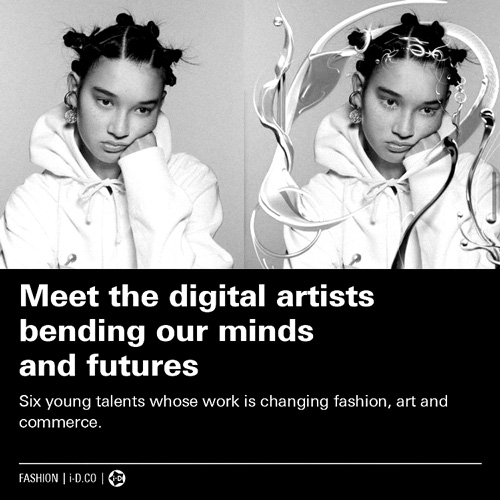
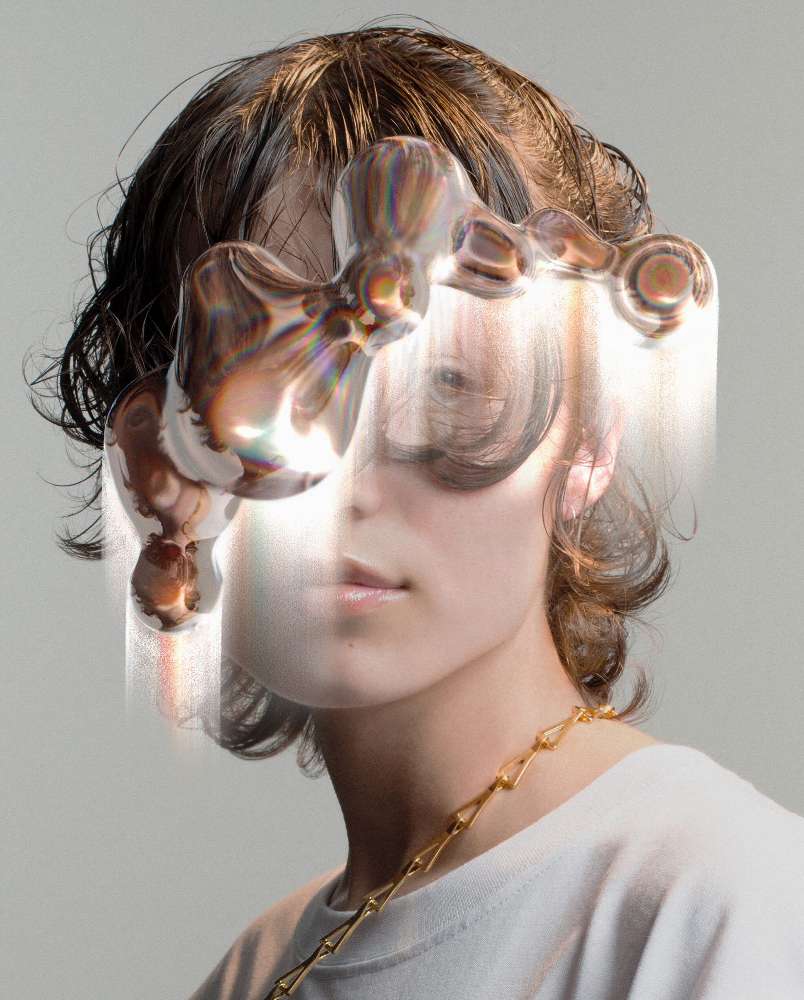

i-D ASIA / BENDING MINDS AND FUTURES
AR. Fashion. Image (2021)
“Curious about how the industry is changing for those on the inside, we spoke to six up and coming artists, working within the digital universe, about their practice and their predictions for the future of the cyber landscape.” — i-D Asia (April 2021)
For this editorial collaboration, i-D Asia provided me with a portrait to be manipulated digitally, which I perceived as an opportunity to cast a virtual accessory through the medium of Augmented Reality. This amorphous headpiece thus becomes a modified extension of my AR effect ‘Transference’, generated using a high-definition glass shader and render pass light leaks.
This portrait accompanies the article 'Meet the digital artists bending our minds and futures: six young talents whose work is changing fashion, art and commerce', available on i-d.vice.com
AR. Fashion. Image (2021)
“Curious about how the industry is changing for those on the inside, we spoke to six up and coming artists, working within the digital universe, about their practice and their predictions for the future of the cyber landscape.” — i-D Asia (April 2021)
For this editorial collaboration, i-D Asia provided me with a portrait to be manipulated digitally, which I perceived as an opportunity to cast a virtual accessory through the medium of Augmented Reality. This amorphous headpiece thus becomes a modified extension of my AR effect ‘Transference’, generated using a high-definition glass shader and render pass light leaks.
This portrait accompanies the article 'Meet the digital artists bending our minds and futures: six young talents whose work is changing fashion, art and commerce', available on i-d.vice.com

Photography / Edward Mulvihill
Styling / Sarah Pritchard
Talent / Coco Riminton
Styling / Sarah Pritchard
Talent / Coco Riminton